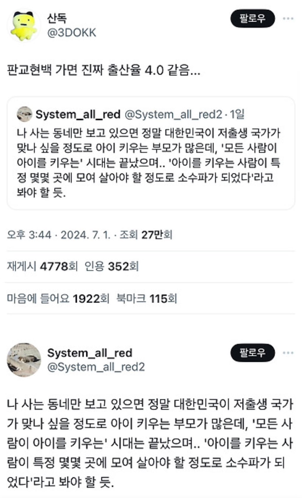
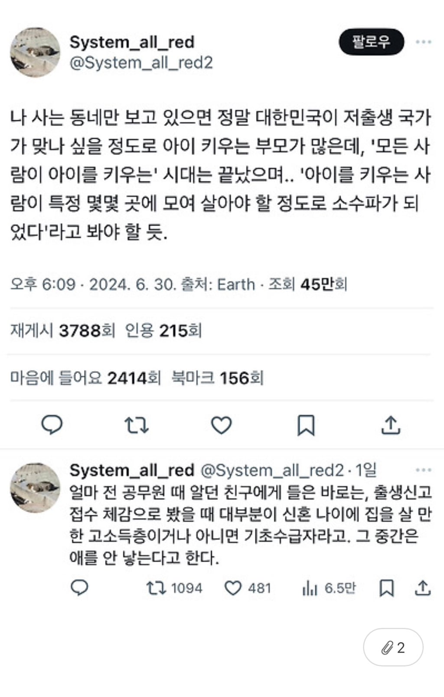

신도시는 애들 진짜 많더라


신도시는 애들 진짜 많더라
아파트 어린이집조차도 대기많아서 못갈듯하고
주변에서는 유치원 3탈이라는데 걱정
자식이 자산이던 시대가 끝나서 그런것 같음. 어차피 투자못해서 자식=노동력이 되는 저소득층이나 넉넉히 투자가 가능한 고소득층에게만 자식의 메리트가 생기는거지
잘사는 동네는 애들이 많다
동탄 과천 판교 광교 체감 되긴함
기초수급 애는 ㄹㅇ 불쌍하다
이 마인드가 근본 원인이라...
솔직히 위선이지...
내가 그 입장이라 생각해보면
불쌍한 건 사실인데
그렇게 시작해서 기초수급도 불쌍하고 / 200충도 불쌍하고/ 지방충도 불쌍하고/ 편부 편모도 불쌍하고/ 장애인도 불쌍하고 어쩌고
생명탄생에 너무 가치를 두면 저런 조건들이 생기는 거임 그냥 그딴 생각 없이 낳는 게 맞음
개인적으로 위선타령 하는 사람들은 위선조차 없는 세상에 살았으면 좋겠음 순수악들한테 당해봐야지
주변에 위선자 있으면 위선이라도 해서 고맙습니다 해라
아... ㅇㅋ!
가난한거까진 뭐라안하는데 기초수급자 애는 불쌍한 거 맞지. 본인하나 건사못해서 나라 힘을 빌리는데 애는 오죽하겠음? 이건 빈부문제가 아니라 책임의 문제임
이런 말들 하나하나가 쌓여서 아이를 낳지 않는 여론이 형성되는거지.
청주도 애들 빠글빠글하더라.
청주 산부인과에서 일하는 친구가 주변 읍에서도 많이 오긴 하는데 체감상 절대 저출산은 아니라고 하더라 ㅋㅋ
저번에 청주 사는 지인있어서 갔었는데
이유는 모르겠지만
청주 살고싶더라
좋은데 사는 사람들이ㅜ애를 낳고
애를 낳을 사람들이 키우기 좋은 지역으로 몰리는것도 있을거고
한번 가보면 다신 안가야지 생각 듬 ㅋㅋ엘베 시벌 ㅋㅋ
애는 안고 유모차는 들고 에스컬레이터 탄다.
판교 엘베 ㅈ같지 ㅋㅋㅋ
준비된 가정과 싸지른 아기만 존재한다니 ㅜㅠ
분명 남편의 비전을보고 가정을 꾸리고
낳고 기르고 하던게 대부분인 시대가 있었는데
서울대 앞에 지인 동네 놀러갔는데 애들 겁나 많던데 90년대 향수 느꼈음 ㄹㅇ
나랑 와이프도 맨날 하는말이 저건데 ㅋㅋㅋㅋ
저출산이라더니 주변에 애가 왤케 많냐고
지방 오면 전멸
살만한 도시 보면 어린이집 대기 100명 기본임 ㅋㅋㅋㅋ
돈없는데 애낳는건 죄악이지 키울 준비 돈 있는 사람만 낳아서 키우는게 맞다고 본다 가난은 자기만 겪어야지 왜 2세한테 겪게해?
결국 아이를 안 낳는 이유는 경제적인 여건이 더 크다는걸 반증하는거지
솔찍히 좀 더 먹고 살기 편하면, 아이를 안 낳을 이유가 없지
직업이 안정적이면 결혼하고 애를 낳는구나
몰랐어 ㄷㄷ
원래 안정적이고 자리잡은상태면 애낳고 사는거지뭐
신도시들 다 과밀학급이라고 조립식 컨테이너라도 교실 증축하고 난리침. 근데 나도 90년대 그런 동네서 초중고 나왔는데 지금 내가 졸업한 초등학교 한 학년당 반 1개라함. 교실 개 남아돌텐데 다 어따쓰나 궁금
신도시를 지어야지만 출산 유도가 되는건가 싶기도 해
판교 현백 문센 수강신청보다 부지런히클릭했는데 대기 40번에서 안 줄어듦
울산도 애기들 정말 많긴 한데 수도권이랑 좀 다른게 아예 잘 살거나 정말 힘들지 않은 이상 결혼하면 애 낳아서 평범하게 키우는듯
개좆망 신도시 아니면 애들 넘쳐나는듯 당근에 물건 올리면 불티나게 팔림
과거 자녀는 재산이었지만
지금의 자녀는 소비재라잖아
잘사는 동네가면 애들이 엄청 많음 위례에도 애들이 많은데
다들 어디서 이렇게 돈을 많이 벌어서 비싼동네살면서 애를 낳는지....